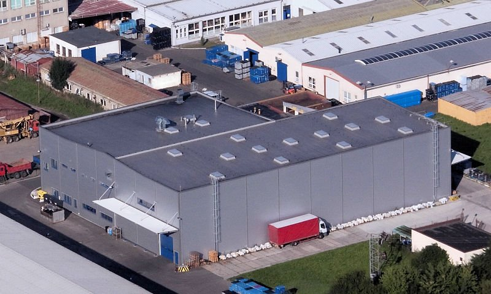
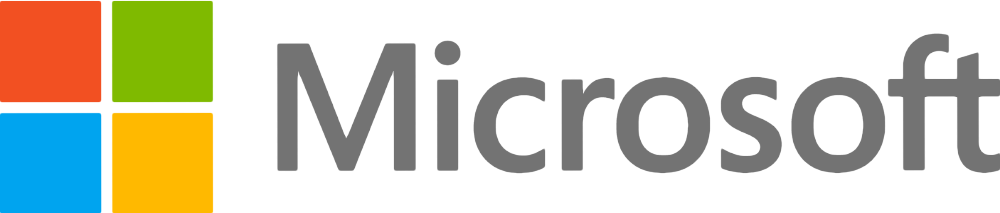
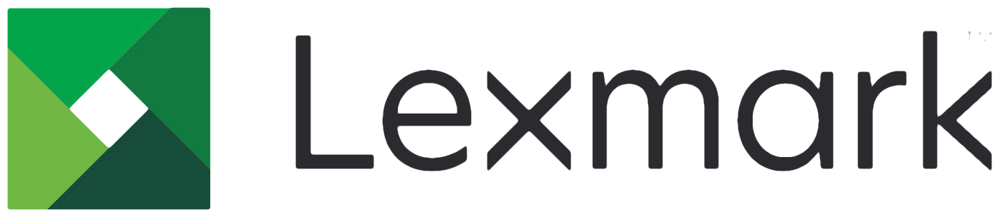
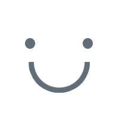
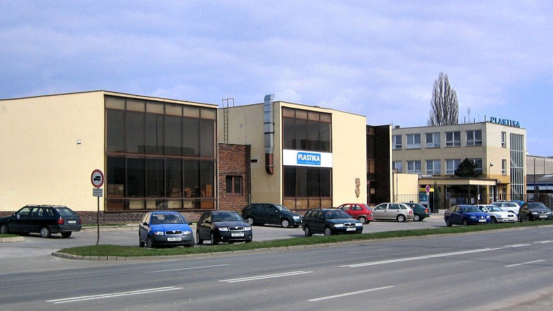
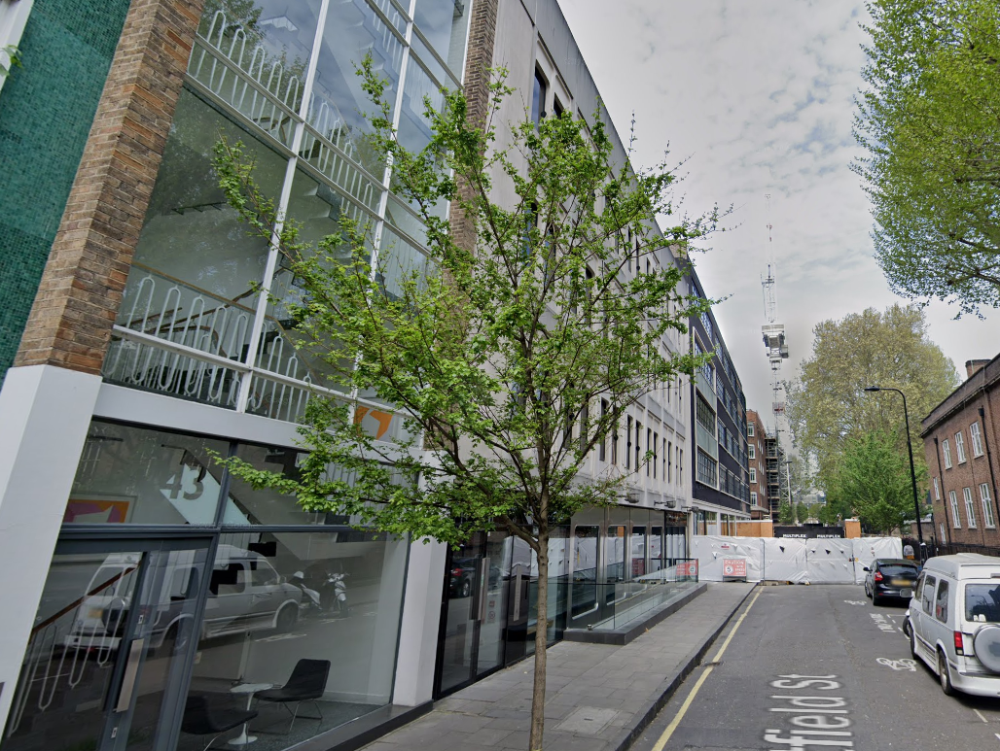

KP Galvano s.r.o.
zákazníci od roku 2020

Této nově založené společnosti pomáhám získávat zcela nové zákazníky
Díky kvalitnímu překladu může KP Galvano bez obav vyhledávat prestižní celosvětové zakázky
Když jste začínající společnost, je potřeba udělat hned napoprvé dobrý dojem. KP Galvano se může u zahraničních klientů pyšnit výborným překladem a soustředit se na důležitý byznys.
I po zakomponování několika ne úplně ideálních změn požadovanými marketingovým oddělením zůstává můj těchto stránek překlad na té nejvyšší úrovni.
Lionbridge Technologies, Inc.
zákazníci od roku 2019

V Lionbridge působím jako certifikovaný překladatel marketingových materiálů a softwaru pro společnosti jako Microsoft a Lexmark
Přes Lionbridge poskytuji marketingové překlady a překlady softwaru těm nejnáročnějším zákazníkům
Do Lionbridge jsem byl nabrán jako překladatel softwaru a marketingových materiálů. Překládal jsem ale také technické manuály, právnické texty a uživatelské příručky.
Za svého působení jsem překládal pro nejrůznější společnosti od Apple a Microsoft, přes Lexmark až po e-learningovou společnost LRN Corporation.


Na to, že jste neměl přístup k žádným našim standardním materiálům, byl váš překlad výborný.

Anonymní Manažer
Produktový manažer
Plastika a.s.
zákazníci od roku 2020

Pro Plastiku překládám a udržuji anglické webové stránky, které této společnosti umožňují získat cenné zahraniční zakázky
Ke zcela novému designu jsem přidal zcela nový anglický překlad
Součástí nové struktury této společnosti jsou i nové stránky, ke kterým bylo potřeba vytvořit nový překlad. Ten starý nezahrnoval všechny české stránky a obsahoval stylistické chyby, které bylo třeba opravit.
Při překládání jsem se zbavil přes 200 drobných i výrazných chyb objevujících se v původním překladu, a vytvořil překlad pro všechny české stránky.
Můj překlad byl zkontrolován rodilým mluvčím a až na pár drobných vyjímek byl po americku správně.
White Label Productions
zákazníci v roce 2018

Umím i titulkovat
Pro White Label Productions jsem vypracoval titulkovací zakázku v zabijáckém termínu
Trochu zvláštní část portfolia je tato titulkovací společnost, která si mě najala pro poskytnutí titulků pro seriál, který se později na nějakou dobu vyskytnul na Netflixu.